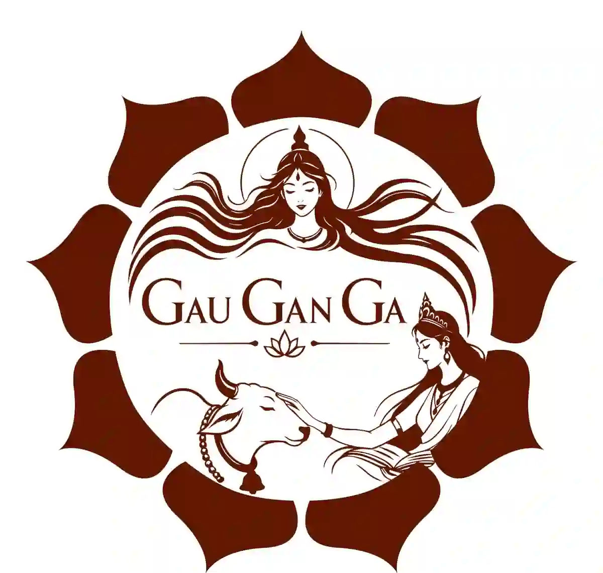
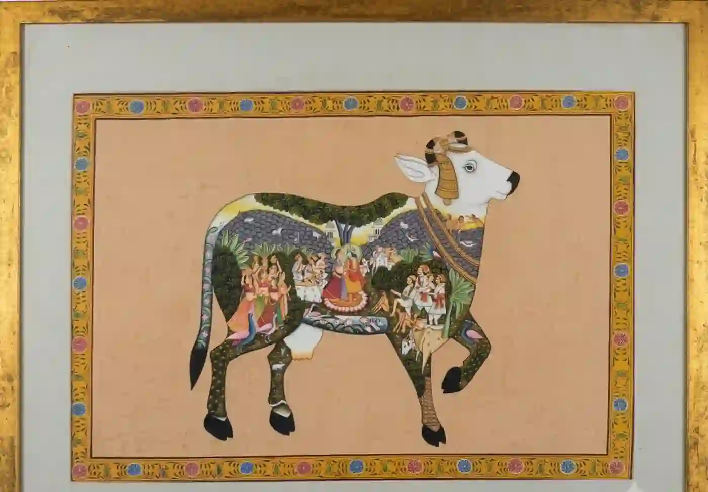

Care
Food, water, shelter, and medical attention.

Gau GanGaA Dattdham initiative
A future-facing gau-seva initiative connecting compassion, soil, farmers, and community.
AboutA cow is more than utility. Care means food and water, medical attention, and dignity through every stage of life. It means gratitude without violence and service without spectacle.
Food, water, shelter, and medical attention.
Traditional knowledge for soil health.
Seva that turns concern into practice.
Gau GanGa carries a 9 lakh gau-samrakshan sankalp: a patient, compassionate future where animal care, natural farming, and community learning meet.
Service begins with attention: to animals, to the earth, and to one another.